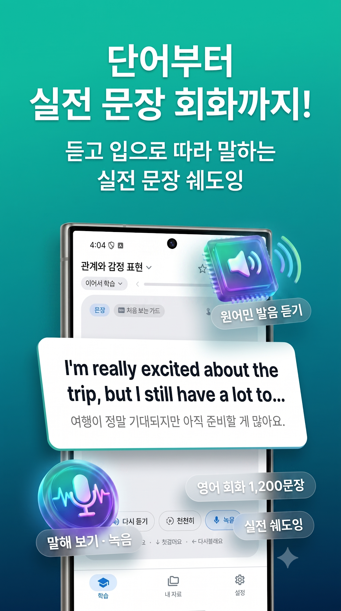

Saytence
듣고 말하는 온디바이스 문장 학습
눈으로만 보는 외국어는 입에서 나오지 않습니다. Saytence(세이턴스)는 문장을 소리 내어 읽고, 원어민 발음과 내 목소리를 비교하며 감각으로 언어를 체득하는 도구입니다.

Core features
몰입감 높은 학습 경험
문법 규칙을 외우는 고통 대신, 입과 귀가 먼저 반응하는 자연스러운 훈련 방식을 제공합니다.
3단계 발화 루프 & STT 음성 피드백
[원어민 TTS 듣기] ➔ [내 목소리 녹음 및 파형 비교] ➔ [음성인식(STT) 실시간 일치도 판별]의 매끄러운 템포로 입과 귀가 기억하게 훈련합니다.
SRS 간격 반복 복습 알고리즘
망각곡선 이론을 적용한 Review Scheduler가 사용자의 학습 반응("알아요 / 헷갈려요 / 다시 볼래요")을 분석해 최적의 복습 주기를 자동 계산합니다.
검증된 내장 코스 (영어 & 일본어)
일상·비즈니스 영어 회화 1,200문장(C01~C12 단계별 코스)과 일본어 JLPT N5, N4, N3 핵심 단어 4,300여 개 및 문장 2,600개가 기본 탑재되어 있습니다.
나만의 단어장(JSON) 무제한 가져오기
좋아하는 미드 대사, 유튜브 자막, 전공 서적 문장을 JSON 파일로 손쉽게 변환해 앱으로 불러오면 즉시 나만의 플래시카드가 완성됩니다.
12개 외국어 음성(TTS/STT) 엔진
영어, 일본어 기본 코스는 물론 중국어(간체/번체), 스페인어, 프랑스어, 독일어 등 12개 외국어의 TTS 발음 듣기 및 STT 음성인식 엔진을 지원합니다.
온디바이스 & 데이터 무제한 백업
모든 데이터가 기기 로컬 SQLite DB에 안전하게 보관되며, 언제든지 JSON 전체 백업 및 복원이 가능해 기기를 교체해도 안전합니다.
Specifications
앱 사양 및 정보
| 앱 이름 | Saytence (세이턴스 - 듣고 말하는 온디바이스 문장 학습) |
|---|---|
| 출시 지역 | 국내(한국) 출시 완료 · 글로벌 순차 런칭 예정 |
| 가격 | 100% 무료 (Free) · 인앱결제나 유료 구독 없이 모든 내장 코스 및 JSON 가져오기 완전 무료 |
| 개발사 | 79's Labs (친구들랩스) |
| 지원 플랫폼 | Android 8.0 (Oreo) 이상 |
| 학습 핵심 기술 | 온디바이스 TTS 음성 합성, STT 음성인식 일치도 분석, SRS 망각곡선 간격 복습 스케줄러 |
| 기본 수록 코스 | 영어 회화 1,200문장 (C01~C12 코스), 일본어 JLPT N5~N3 단어 4,300여 개 & 문장 2,600개 |
| 학습 음성 지원 언어 | 영어, 일본어, 중국어(간체/번체), 한국어, 스페인어, 프랑스어, 독일어, 이탈리아어, 포르투갈어, 아랍어, 태국어 등 12개 외국어 |
| 앱 인터페이스 언어 | 한국어 (국내 출시 완료 · 향후 글로벌 다국어 UI 순차 적용 예정) |
| 커스텀 콘텐츠 확장 | 사용자 정의 JSON 단어장/미드 대사 무제한 가져오기 (문법 검증 및 언어 자동 판별 지원) |
| 데이터 보관 방식 | 100% On-Device 로컬 암호화 저장 (SQLite) 및 JSON 백업/복원 지원 |
FAQ
자주 묻는 질문
정말 모든 기능이 무료인가요?
네, Saytence의 모든 내장 코스, 음성인식(STT) 발음 피드백, 나만의 JSON 단어장 무제한 가져오기 및 백업 기능까지 일체의 유료 결제 없이 100% 무료로 제공됩니다.
인터넷 연결이 없어도 학습할 수 있나요?
네, 모든 내장 코스와 가져온 JSON 문장 데이터, TTS 음성 엔진이 기기 로컬에서 처리되므로 비행기 모드나 오프라인 상태에서도 100% 정상 작동합니다.
JSON 파일에 일부 오타나 오류가 있으면 어떻게 되나요?
Saytence의 스마트 파서가 문법을 사전에 검증하여, 오류가 있는 카드가 있더라도 정상적인 카드들만 골라내어 안전하게 가져올 수 있습니다.
녹음된 내 음성은 어디에 저장되나요?
사용자의 스마트폰 로컬 저장소에만 보관되며, 어떤 서버로도 전송되지 않으므로 개인 프라이버시가 완벽히 보호됩니다.
나만의 미드 대사 & 단어장 JSON 만드는 법
ChatGPT나 Claude로 미드 자막, 영화 명대사, 나만의 단어장을 Saytence용 카드로 3초 만에 변환해보세요.
AI 프롬프트 복사
아래 제공된 Saytence 전용 생성 프롬프트를 원클릭으로 복사합니다.
AI에게 대사 전달
ChatGPT, Claude, Gemini 등에 프롬프트와 함께 공부하고 싶은 스크립트나 단어 목록을 붙여넣습니다.
JSON 파일로 저장
AI가 생성한 JSON 코드를 메모장에 붙여넣고 .json 확장자로 저장하거나 텍스트를 복사합니다.
앱에서 가져오기 완료
Saytence 앱 [설정] ➔ [JSON 가져오기]에서 파일을 선택하면 즉시 학습 카드가 생성됩니다.
AI 변환 프롬프트 및 JSON 예시 코드 보기
원클릭 복사 가능한 AI 프롬프트와 실제 JSON 코드 예시, 필드 명세서를 확인할 수 있습니다.
상세 가이드 펼치기
AI 변환 프롬프트 및 JSON 예시 코드 보기
원클릭 복사 가능한 AI 프롬프트와 실제 JSON 코드 예시, 필드 명세서를 확인할 수 있습니다.
아래 스크립트를 Saytence 앱에 업로드할 수 있는 JSON으로 만들어줘. 조건: - 결과는 JSON만 출력해줘. 설명, 마크다운, 코드블록은 쓰지 마. - format은 "saytence-pack" - schemaVersion은 1 - sourceLanguage는 원문 언어에 맞게 넣어줘. 예: 일본어 "ja-JP", 영어 "en-US" - targetLanguage는 "ko-KR" - 각 대사는 items 배열에 넣어줘. - 각 item에는 id, type, text, meaning, pronunciation, description, tags, difficulty를 넣어줘. - type은 문장이면 "sentence", 단어면 "word"로 해줘. - text는 원문 그대로 넣어줘. - meaning은 자연스러운 한국어 해석으로 만들어줘. - pronunciation은 한국어 사용자가 읽을 수 있게 한글식 발음으로 적어줘. 일본어는 가능하면 히라가나 읽기도 description에 포함해줘. - description에는 문법, 뉘앙스, 장면 설명을 짧고 보기 쉽게 적어줘. - 너무 긴 대사는 공부하기 좋게 짧은 문장 단위로 나눠줘. - 불필요한 지문, 효과음, 장면 설명은 제외해줘. - id는 중복되지 않게 "line-001" 형식으로 만들어줘. [여기에 스크립트 또는 단어 목록을 붙여넣으세요]
실제 JSON 작성 예시
필요에 따라 상세 정보가 담긴 풀 패키지 형식이나 핵심만 적은 초간단 형식 모두 지원합니다.
{
"format": "saytence-pack",
"schemaVersion": 1,
"id": "friends-s01e01",
"title": "Friends S01E01 - 모니카의 저녁식사",
"description": "미드 프렌즈 시즌1 1화 주요 회화 표현 모음",
"sourceLanguage": "en-US",
"targetLanguage": "ko-KR",
"version": 1,
"author": "Saytence Learner",
"items": [
{
"id": "friends-001",
"type": "sentence",
"text": "There's nothing to tell.",
"meaning": "말할 게 아무것도 없어.",
"pronunciation": "데얼즈 너씽 투 텔",
"description": "상대가 캐묻는 상황에서 별일 아니라고 대화를 넘길 때 쓰는 자연스러운 일상 표현.",
"expressions": [
{
"text": "nothing to tell",
"meaning": "말할 것이 없음",
"description": "길게 설명하고 싶지 않을 때 씁니다."
}
],
"tags": ["drama", "daily", "friends"],
"difficulty": 1
},
{
"id": "friends-002",
"type": "word",
"text": "awkward",
"meaning": "어색한, 곤란한",
"pronunciation": "오크워드",
"description": "분위기나 상황이 뻘쭘하고 불편할 때 자주 쓰이는 핵심 형용사.",
"examples": [
{
"text": "That was really awkward.",
"meaning": "그 상황 진짜 어색했어."
}
],
"tags": ["emotion", "slang"],
"difficulty": 2
}
]
}{
"title": "영화 속 명대사",
"sourceLanguage": "en-US",
"items": [
{
"text": "May the Force be with you.",
"meaning": "포스가 함께하길."
},
{
"text": "I'll be back.",
"meaning": "다시 돌아올게."
},
{
"text": "Here's looking at you, kid.",
"meaning": "당신의 눈동자에 건배를."
}
]
}JSON 규격 및 필드 상세 가이드
| 필드명 | 타입 / 필수 | 설명 및 작성 가이드 |
|---|---|---|
format |
String (권장) | 패키지 포맷 식별자. "saytence-pack"으로 기재합니다. |
title |
String (필수) | 앱 내 카드 묶음 목록에 표시될 제목입니다. (예: "라라랜드 OST 주요 문장") |
sourceLanguage |
String (권장) | 원문 언어 코드입니다. 영어: "en-US", 일본어: "ja-JP", 중국어: "zh-CN" 등. (생략 시 앱이 자동 감지) |
items[].type |
String (선택) | "sentence"(문장, 기본값) 또는 "word"(단어)로 구분합니다. |
items[].text |
String (필수) | 학습할 원문 텍스트입니다. TTS 음성 출력 및 발음 비교 대상이 됩니다. |
items[].meaning |
String (필수) | 한국어 뜻과 자연스러운 번역 문장입니다. |
items[].pronunciation |
String (선택) | 한국어 사용자가 읽기 쉽도록 표기한 발음 안내입니다. (예: "모우 이치도") |
items[].description |
String (선택) | 문법 포인트, 대사의 뉘앙스, 사용 상황 또는 히라가나 읽기 팁을 적어둡니다. |
items[].tags |
Array (선택) | 카드를 분류할 태그 배열입니다. (예: ["미드", "필수회화", "초급"]) |